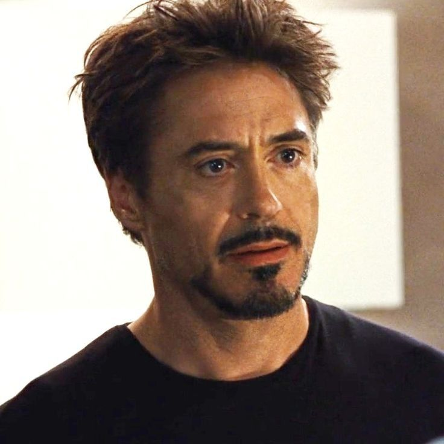

Tony Stark adalah seorang jenius, miliarder, playboy, dan filantropis. Sebagai pewaris Stark Industries, ia menciptakan baju zirah berteknologi tinggi dan menjelma menjadi Iron Man.
Ia adalah salah satu anggota pendiri Avengers, dan perannya sangat penting dalam menjaga bumi dari berbagai ancaman, termasuk Thanos. Dengan AI JARVIS dan teknologi canggihnya, Tony mewakili pahlawan modern berbasis otak, bukan kekuatan.
Meskipun penuh ego, perjalanan karakternya menuju pengorbanan di Avengers: Endgame menjadikannya ikon pahlawan sejati.